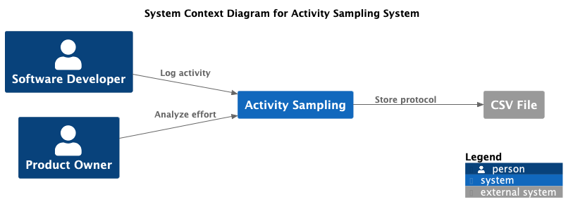
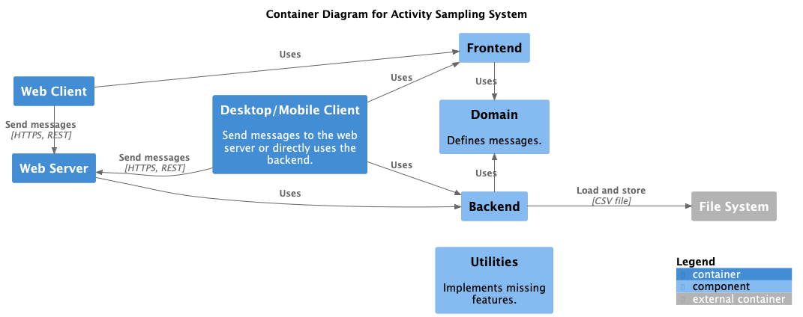

Value Proposition
Periodically ask the user about their current activity and log it for analysis.
Key Stakeholder
- Freelancers
- Software engineers
- Software developers
- Product Owners
- Project managers
Core Functions
- Log activity
- Recent activities
- Time report
- Timesheet
Planned:
- Monitor capacity
- Lead time and throughput
- Estimate effort
Quality Requirements
- Easy to use
- Portable for all major platforms (macOS, Windows, Linux, iOS, Android)
- Fast reporting (< 1 sec)
Business Context
Core Decisions - Good or Bad
- Use web first approach to target all platforms (PWA)
- Build components for mobile first
- Use Web Components as a stable framework
- Reduce the use of third-party frameworks and libraries to a minimum
Components / Modules
Technologies
- Implement with Vanilla JS and JavaScript modules
- lit-html for Web Components
- Vite
- Express
- Node.js LTS
- ESLint, Jest, Prettier
- Build with make and support basic NPM scripts (build, test, start)
Planned:
- Electron
- Capacitor or Apache Cordova
- Cloud (Azure, AWS, ...)
Risks and Missing Information
- Creating UI components is complex (HTML, CSS) without UI library and widely used widgets
- Using a UI library is a vendor lock and can it make difficult to create own components
- Platform features such as notifications do not work as expected in all browsers